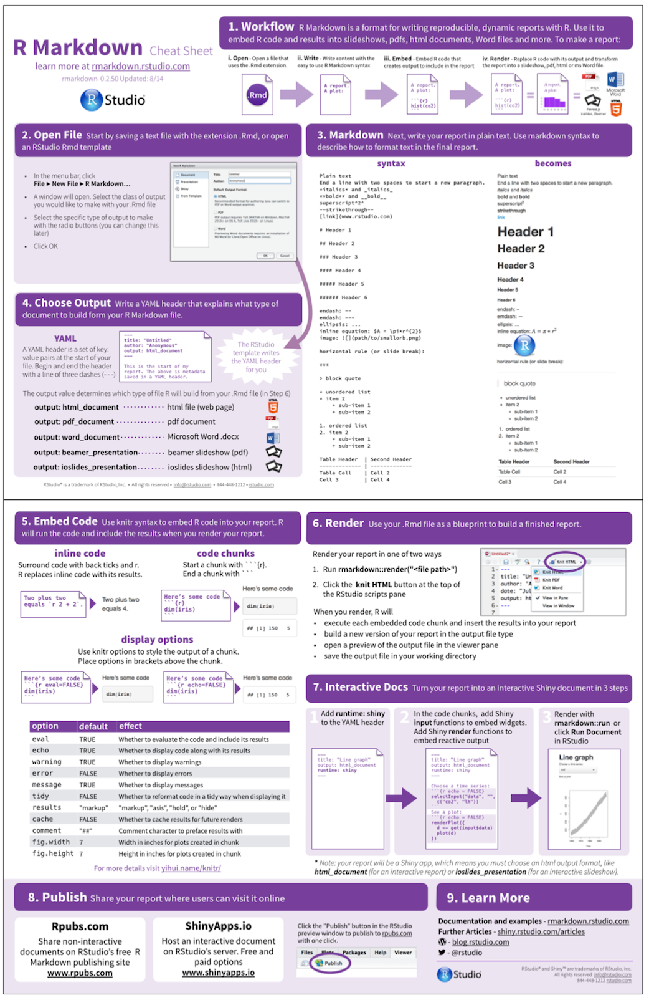

Introduction to R Markdown
-
R Markdown provides an authoring framework for data science. You can use a single R Markdown file to both
-
save and execute code
-
generate high quality reports that can be shared with an audience
-
R Markdown documents are fully reproducible and support dozens of static and dynamic output formats.
-
The key tool for R is knitr, which allows you to create a document that is a mixture of text and some chunks of code. When the document is processed by knitr, chunks of R code will be executed, and graphs or other results inserted.
-
This sort of idea has been called “literate programming”.
-
knitr allows you to mix basically any sort of text with any sort of code, but we recommend that you use R Markdown, which mixes Markdown with R. Markdown is a light-weight mark-up language for creating web pages.
-
Within R Studio, click File → New File → R Markdown. You can stick with the default (HTML output), but give it a title.
-
When you run render, R Markdown feeds the .Rmd file to knitr ⧉, which executes all of the code chunks and creates a new markdown (.md) document which includes the code and it’s output.
-
The markdown file generated by knitr is then processed by pandoc ⧉ which is responsible for creating the finished format.
-
This may sound complicated, but R Markdown makes it extremely simple by encapsulating all of the above processing into a single render function.
Basic components of R Markdown
-
The first chunk is called the header. Here we will later add some instructions. But for now we will give it a simple information.
--- title: "First R markdown document " author: "Rani Basna" date: "19/11/2019" output: html_document --- -
you can change things here. Please do change according to your information.
-
RStudio creates the document with some example text to get you started. Note below that there are chunks like
```{r} summary(cars) ``` -
These are chunks of R code that will be executed by knitr and replaced by their results. More on this later.
Also note the web address that’s put between angle brackets (< >) as well as the double-asterisks in Knit.
-
As you can see, there are essentially three types of components in an R Markdown document:
- Text (written in R Markdown)
- Code chunks (written in R, or another supported language).
- The YAML header
-
For a full detail about the markdown language, you can see the following links GitHub.
-
Besides, here is an image of the typical steps and the most used commands.

More on the yaml header and parameters
-
One of the many benefits of working with R Markdown is that you can reproduce analysis at the click of a button. This makes it very easy to update any work and alter any input parameters within the report. Parameterized reports extend this one step further, and allow users to specify one or more parameters to customize the analysis. This is useful if you want to create a report template that can be reused across multiple similar scenarios. Examples may include:
-
Showing results for a specific geographic location.
-
Running a report that covers a specific time period.
-
Running a single analysis multiple times for different assumptions.
-
Controlling the behavior of knitr (e.g., specify if you want the code to be displayed or not).
-
-
Parameters are specified using the params field within the YAML section. We can specify one or more parameters with each item on a new line. As an example, we will work with out clustering_report.Rmd file:
-
The idea is that we want to control over our report different scinario. Suppose that we want to generate a report with different clustering method. If you are familiar with your function you should know how to do that. For our case we the function
fviz_nbclustfrom the library factoextra can take different clustering methods. Allowed values include kmeans, pam, clara and hcut (for hierarchical clustering). -
All standard R types that can be parsed by yaml::yaml.load() can be included as parameters, including character, numeric, integer, and logical types. We can also use R objects by including !r before R expressions.
-
let us open the clustering_report inside the markdown_reports folder. edit the file so yaml header looks like this:
--- title: "Cluster-analysis" output: html_document: default params: cl_method: !r kmeans Rows_num : 5 --- -
Change the first chunck so it looks like this:
```{r} data("USArrests") # Loading the data set df <- scale(USArrests) # Scaling the data # View the firt 3 rows of the data head(df, params$Rows_num) ``` -
Also change the second chunck so it lokks like this:
```{r} set.seed(123) # Elbow method fviz_nbclust(df, FUNcluster = params$cl_method, method = "wss") + geom_vline(xintercept = 4, linetype = 2)+ labs(subtitle = "Elbow method") # Silhouette method fviz_nbclust(df, FUNcluster = params$cl_method, method = "silhouette")+ labs(subtitle = "Silhouette method") # Gap statistic # nboot = 50 to keep the function speedy. # recommended value: nboot= 500 for your analysis. # Use verbose = FALSE to hide computing progression. fviz_nbclust(df, FUNcluster = params$cl_method, nstart = 25, method = "gap_stat", nboot = 200)+ labs(subtitle = "Gap statistic method") ```- If you are working with git you may want to commit and push changes from time to time as an exercize.
Kinting with parameters
-
There are four ways in which a parameterized report can be knitted:
- Using the Knit button within RStudio.
- By running the R command rmarkdown::render() with the params argument from r consol.
- By running on the terminal command line: R -e 'rmarkdown::render("my_file.Rmd")'
- Using an interactive user interface to input parameter values.
rmarkdown::render("MyDocument.Rmd", params = list( year = 2017, region = "Asia", printcode = FALSE, file = "file2.csv" ))
-
Now run the fowwlowing code from R consol
library(factoextra) rmarkdown::render("markdown_reports/clustering_report.Rmd", params = list(cl_method = hcut, Rows_num = 4))